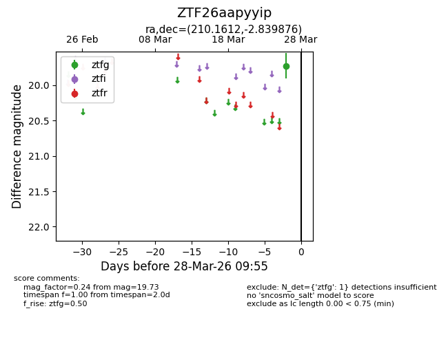
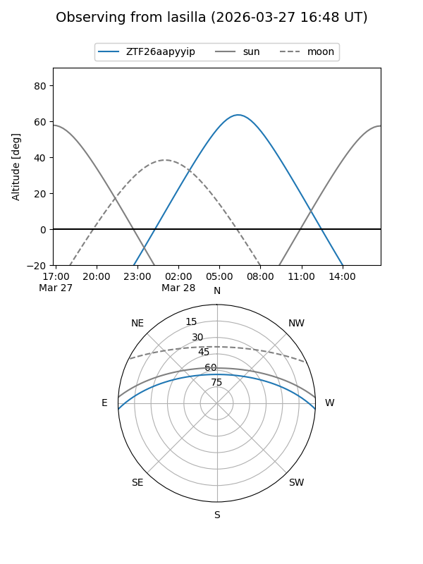
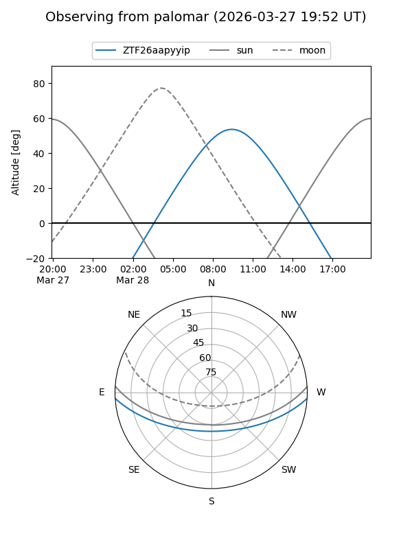

ZTF26aapyyip
Target ZTF26aapyyip at 2026-03-28 09:58
Aliases and brokers:
FINK: link
Lasair: link
ALeRCE: link
alt names
ZTF26aapyyip (ztf,fink_ztf)
Coordinates:
equatorial (ra, dec) = 210.1612,-2.83988
equatorial (HMS+DMS) = 14:00:38.69,-02:50:23.55
galactic (l, b) = (334.7407,+55.69840)
Flags:
Photometry:
last ztfg=19.73
1 ztfg detections
Lightcurve

Visibility


Additional plots